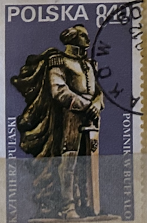
| SOURCE | TITLE| IMAGE MATCH | click to source page |
| HipStamp | Poland 1979 Scott 2357 CTO - 8.40z, Kazimierz Pulaski statue | Europe - Poland, General Issue Stamp / HipStamp | 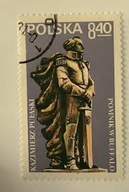 |
| volstamp.in.ua | Buy 1954 USA Stamp (Statue of Liberty (1875), Liberty Island, New York City) Used №662 | 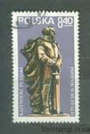 |
| eBay | POLAND # 2345 AMERICAN REVOLUTIONIST STATESMAN SOLDIER | eBay | 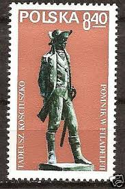 |
| Osta | Osta.ee - auctions, e-stores and Eesti Disain - many special offers - Osta.ee | 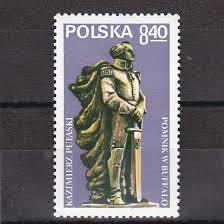 |
| Todocolección | 6 polonia polska 1982 maria kazimiera sobieska - Buy Antique stamps of Poland on todocoleccion | 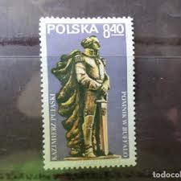 |
| Allegro | Zn Mo Sb - Polskie znaczki 1971 - 1980 - Allegro.pl | 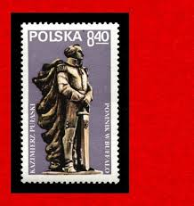 |
| Stamp Community Forum | Statues On Stamps - Page 22 - Stamp Community Forum | 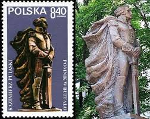 |
| Duzik Stamps | Ireland Eire 1979 'Europa' SG456/7 Set of 2 MNH - Duzik Stamps | 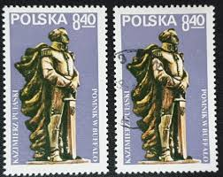 |
| Todocolección | polonia 2454** - año 1979 - monumento en filade - Buy Antique stamps of Poland on todocoleccion | 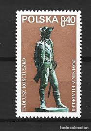 |
| Todocolección | 1921 - polonia - aguila nacional - yvert 223 - Buy Antique stamps of Poland on todocoleccion | 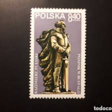 |
| polska-filatelistyka.co.uk | Poland 1979 - Fi 2489 MNH** - Polska Filatelistyka | 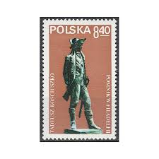 |
| NAVER | 오늘의 인물과 역사 - 3/06 : 네이버 블로그 | 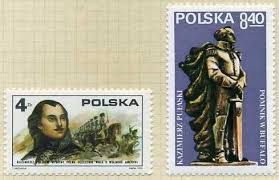 |
| Free stamp catalogue | Stamps from Hungary - Freestampcatalogue.com - The free online stampcatalogue with over 500.000 stamps listed. | 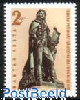 |
| Mystic Stamp Company | 2345 - 1979 Poland - Mystic Stamp Company | 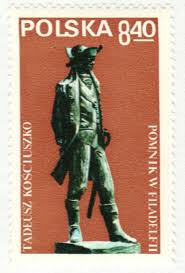 |
| efilatelija.lt | Hungary stamps (1973) for sale. Writer | 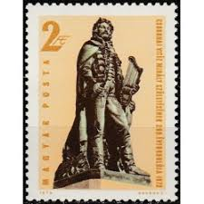 |
| Free stamp catalogue | Stamps from Poland - Freestampcatalogue.com - The free online stampcatalogue with over 500.000 stamps listed. | 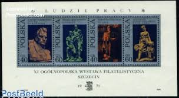 |
| iStock | General Tadeusz Kościuszko 18th Century Polish Military Leader Stock Photo - Download Image Now - iStock | 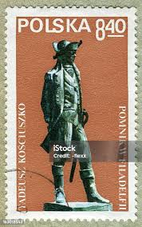 |
| eBay | Poland 2357 two stamps, MNH. Michel 2649. Gen. Casimir Pulaski, 1979. Monument. | eBay | 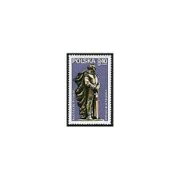 |
| eBay | Poland 1827-1830,1830a sheet,MNH.Michel 2097-2100,Bl.46. Sculptures,1971. | eBay | 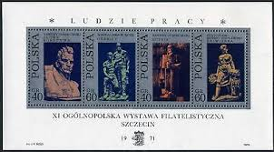 |
| eBay | JERSEY 2013 LEGACY OF QUEEN VICTORIA, EDWARD VII UNMOUNTED MINT, MNH | eBay | 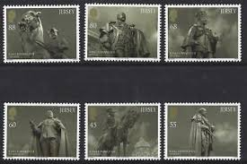 |
| eBay | POLAND 1971 The 11th National Philatelic Exhibition in Szczecin - Sculptures | eBay | 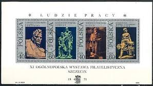 |
| Windsor Stamps | 2015 Queen Elizabeth II, Longest Reigning Monarch | 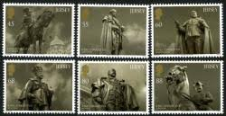 |
| Shutterstock | 5+ Thousand Hungarian Postage Stamp Royalty-Free Images, Stock Photos & Pictures | Shutterstock | 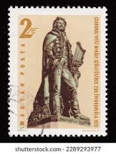 |
| Osta | VAR_172 1971 Poola kunst filateelia (247163972) - Osta.ee | 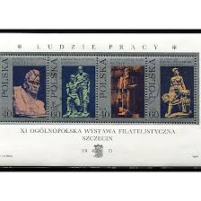 |
| Freestampcatalogue.com | Stamps from Jersey - Freestampcatalogue.com - The free online stampcatalogue with over 500.000 stamps listed. | 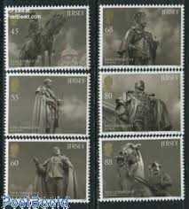 |
| ebid.net | Vintage Devon Honiton Pottery Emerton Milk Jug on eBid United States | 179715816 | 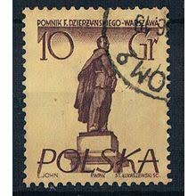 |
| allnumis.com | 45 groszy 1955 - Marie Sklodowska Curie, Warsaw - Poland - Stamp - 16569 | 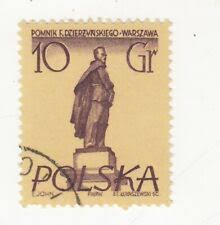 |
| Dreamstime.com | Postage Stamp Hungary, Magyar 1973. Mihaly Csokonai Vitéz Poet Editorial Stock Image - Image of hungary, famous: 216862734 | 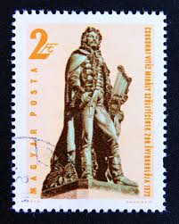 |
| eBay | Royalty Edward VII (1902-1910) British Stamps for sale | eBay | 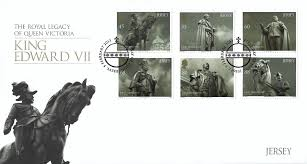 |
| Blogger.com | DATABASE: Stefan Lukaszewski | 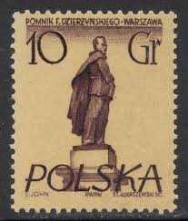 |
| seemystamps.com | See My Stamps! - A Place to Show Off Your Stamp Collection | Page 121 | 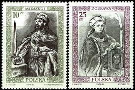 |
| eBay | Poland - 1955 - 10Gr - Warsaw Statues - Feliks Dzierzynski - #18148 | eBay | 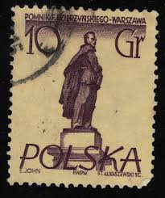 |
| Todocolección | polonia 1964 scott 1281 sello º flora flor rosa - Buy Antique stamps of Poland on todocoleccion | 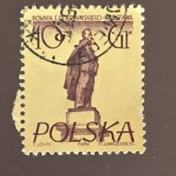 |
| seemystamps.com | See My Stamps! - A Place to Show Off Your Stamp Collection | Page 76 | 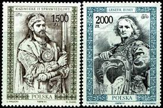 |
| eBay | Cancelled to Order/CTO Used Polish Stamps for sale | eBay | 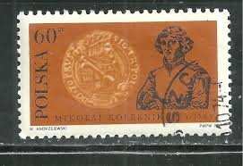 |
| Dreamstime.com | Kosciuszko Philadelphia Stock Photos - Free & Royalty-Free Stock Photos from Dreamstime | 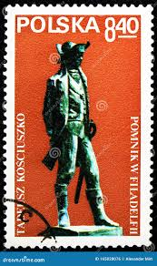 |
| Shutterstock | Poland 1955 May 17 10 Grosz Stock Photo 2310898267 | Shutterstock | 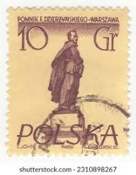 |
| HipStamp | Listings from 'ozzy1' in Europe > Poland / HipStamp | 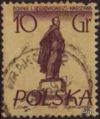 |
| Shutterstock | Poland Circa 1955 Postage Stamp Printed Stock Photo 334617914 | Shutterstock | 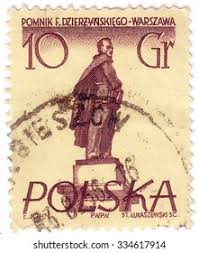 |
| HipStamp | Poland 674 - Used - Adam Mickiewicz | Europe - Poland, General Issue Stamp / HipStamp | 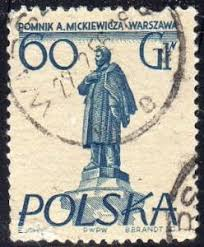 |
| lastdodo.com | Mihály Csokonai Vitéz 2 (1973) - Hungary - LastDodo | 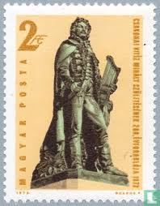 |
| Shutterstock | Madrid Spain July 10 2020 Vintage Foto de stock 1786786778 | Shutterstock | 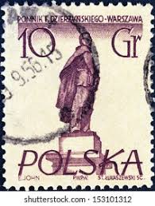 |
| Todocolección | 1920 polonia - Buy Antique stamps of Poland on todocoleccion | 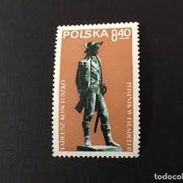 |
| eBay | Poland 1978 Narodowy Theatre Drama Dramaturgy Actors Opera Entertainment 6v MNH | eBay | 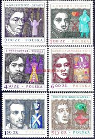 |
| eBay | POLAND BLACK PRINT 1958 RARE !! MONUMENT KING h5221 | eBay | 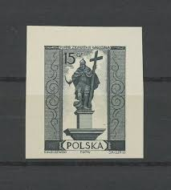 |
| eBay | POLAND BLACK PRINT 1958 RARE !! MONUMENT WARRIOR 'm4142 | eBay | 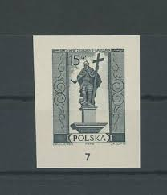 |
| Alamy | A collection of old Russian Soviet Revolutionary lapel badges Stock Photo - Alamy | 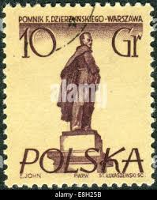 |
| HipStamp | Poland 890: 60g Kurpic, CTO, VF | Europe - Poland, General Issue Stamp / HipStamp | 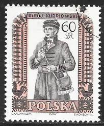 |
| lastdodo.com | Adam Mickiewicz [1798-1855] Stamp catalogue - LastDodo | 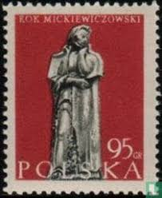 |
| Shutterstock | Romania Circa 1961 Stamp Printed By Stock Photo 82805620 | Shutterstock | |
| Gregg Nelson Stamps | Mexico Modern Scott 807-1499 Archives - Gregg Nelson Stamps | |
| TouchStamps | Stamp: Krupie (Poland 1959) - TouchStamps | |
| Country : Malaysia 🇲🇾 . . . . . . . . . . . . . . . . . .#fruits #fruitlover #rambutan #stamp #stampcollection #malaysia #philately #germany #italy #china #covid_19 #kerala #india #mallu #fashion #instagram #logan #pulasan #mangosteen #mango #reels ... | ||
| Shutterstock | 3+ Thousand Architect Stamp Royalty-Free Images, Stock Photos & Pictures | Shutterstock | |
| Shutterstock | Poland Circa 1950s Stamp Printed Poland Stock Photo 42693403 | Shutterstock | |
| Find Your Stamps Value | Royalty Type of 1986: Kazimierz I Odnowiciel 15z Multicolored stamp price, value | |
| sellosmundo.com | POMNIK ZYGMUNTA III - WARSZAWA. Poland Europe ref. 197940 | |
| eBay UK | Art, Artists Used Polish Stamps for sale | eBay UK |  |
| eBay | Poland 1946 Professions 6 Zt (FBX) | eBay |